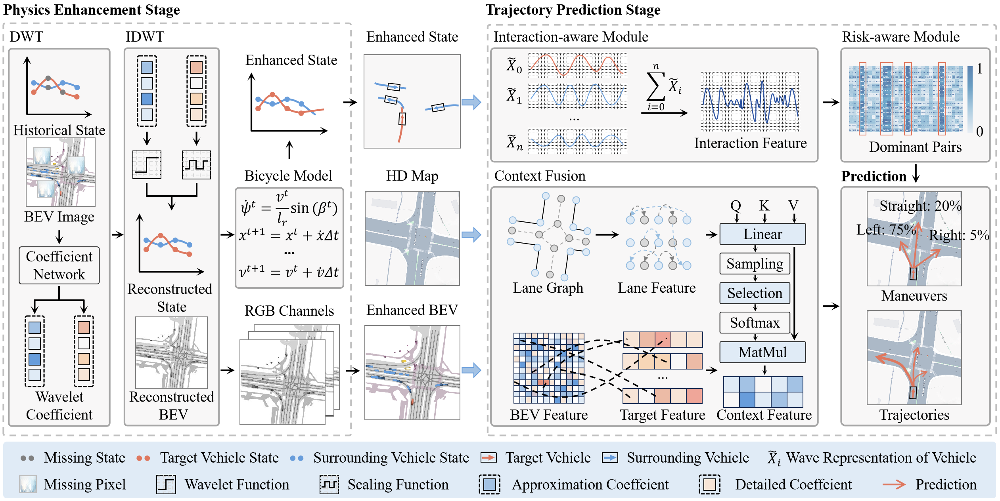

Chengyue WangPh.D Student |
Short Bio
I am currently a Ph.D. student at State Key Laboratory of Internet of Things for Smart City (SKL-IOTSC), University of Macau, advised by Prof. Zhenning Li. Previously, I received my Bachelor's degree from Chang'an University and my Master's degree from the University of Illinois Urbana-Champaign (UIUC). Before joining UM, I was also fortunate to be mentored by Prof. Ruimin Ke and Prof. Ruey (Kelvin) Cheu.
I am broadly interested in AI for Transportation. My current research interests focus on Autonomous Driving and Transportation safety. On these topics, I have published 10+ papers in prestigious journals or AI conferences such as TPAMI, AAAI(Oral), MM(Oral), TITS, Information Fusion, AAP, IJCAI, and ICRA.
News
We are looking for self-motivated RAs (with Funding) to join HUMAN LAB! If interested, please don't hesitate to email me!
[02/2025] One paper has been accepted by IEEE TITS!
[01/2025] One paper has been selected for Oral Presentation in AAAI 2025!
[01/2025] One paper has been accepted by IEEE TPAMI!
Selected Publications
|

WAKE: Towards Robust and Physically Feasible Trajectory Prediction for Autonomous Vehicles with WAvelet and KinEmatics Synergy
Chengyue Wang*, Haicheng Liao*, Zhenning Li†, Chengzhong Xu IEEE Transactions on Pattern Analysis and Machine Intelligence (TPAMI), 2025 |
|

NEST: A Neuromodulated Small-world Hypergraph Trajectory Prediction Model for Autonomous Driving
Chengyue Wang*, Haicheng Liao*, Bonan Wang, Yanchen Guan, Bin Rao, Ziyuan Pu, Zhiyong Cui, Cheng-zhong Xu, Zhenning Li† AAAI Conference on Artificial Intelligence (AAAI), 2025 [AI Conf., CCF-A, Oral, AR: 600/12957 = 4.6%] |
|

Minds on the Move: Decoding Trajectory Prediction in Autonomous Driving with Cognitive Insights
Haicheng Liao*, Chengyue Wang*, Kaiqun Zhu, Yilong Ren, Bolin Gao, Shengbo Eben Li, Chengzhong Xu, Zhenning Li† IEEE Transactions on Intelligent Transportation Systems (TITS), 2025 |
|

DEMO: A Dynamics-Enhanced Learning Model for Multi-Horizon Trajectory Prediction in Autonomous Vehicles
Chengyue Wang*, Haicheng Liao*, Kaiqun Zhu, Guohui Zhang, Zhenning Li† Information Fusion, 2025 |
|

Efficient and robust estimation of single-vehicle crash severity: A mixed logit model with heterogeneity in means and variances
Zhenning Li†*, Chengyue Wang*, Haicheng Liao, Guofa Li, Chengzhong Xu† Accident Analysis & Prevention (AAP), 2024 |
|
|
Physics-Informed Trajectory Prediction for Autonomous Driving under Missing Observation
Haicheng Liao*, Chengyue Wang*, Zhenning Li†, Yongkang Li, Bonan Wang, Guofa Li, Chengzhong Xu International Joint Conference on Artificial Intelligence (IJCAI), 2024 [AI Conf., CCF-A, AR: 791/5651 = 14.0%] |
Academic Services
Referee for Journals and Conferences:
IEEE Transactions on Intelligent Transportation Systems (TITS)
IEEE International Conference on Robotics and Automation (ICRA)